목차
PART A
프로젝트 타임라인
뭐하던 사람인데 발표를 하나요?
10%
PART B
프로젝트 소개
택가이웹 · AICR · 택가이코드
20%
PART C
AI 트렌드 & 바이브코딩
개념 정리, 도구 지형도, 하네스 엔지니어링
60%
PART D
실전 팁 & 지름길
뭘 쓰면 좋은가, 공부 방식, 추천 스택
10%
비중 — A : B : C : D = 1 : 2 : 6 : 1
PART A : 프로젝트 타임라인
뭐하던 사람인데
발표를 하나요?
프로젝트 타임라인 & 당위성
프로젝트 타임라인
신한AI
디지털서비스개발부
Tech혁신Unit
혼자 만든 게 아닙니다 — 같이 일했던 동료에게 배웠고, 그때의 경험이 지금의 토대
신한은행에서
AI 웹사이트를 만들게 된 계기
- AI 붐 → 부서내 셀별 과제: "뭔가를 만들어봐라"
- 각 셀별로 발표를 한 뒤에 과제로 선정
- 마침 영업 온 IBM 연수 다녀왔는데 — 유료인데 성능도 별로
- "왜 늘 돈 주고 이런 걸 들여올까?" → 직접 만들자
- 기존 오픈소스(Open WebUI 등) → 내부통제/관리자 기능 부족
- "직접 만드는 게 낫겠다" — AI Lounge 만들어본 경험이 있으니까
- 셀 순회 발표 → 테크라운지 사내발표
과거 경험
AI Lounge
신한AI · 그룹사 Private GPT
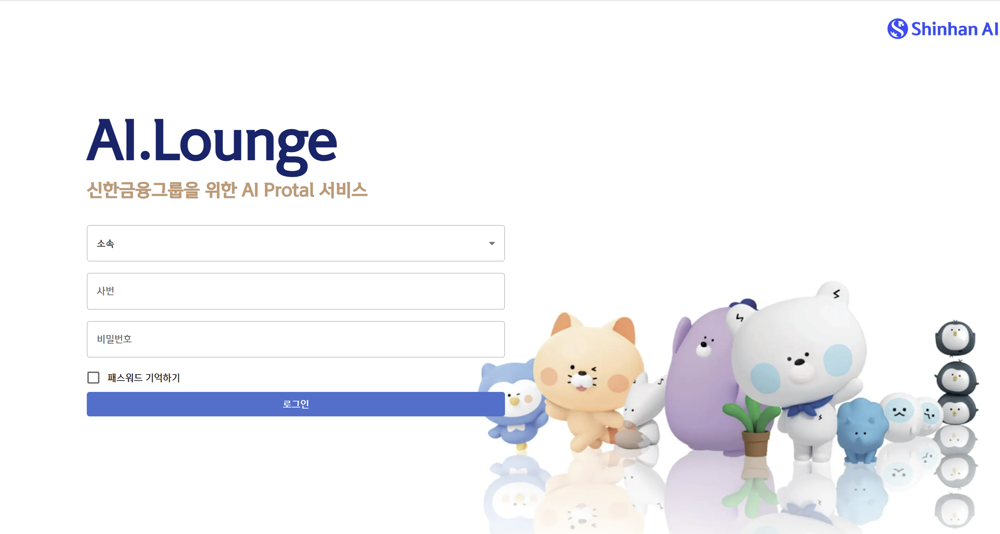
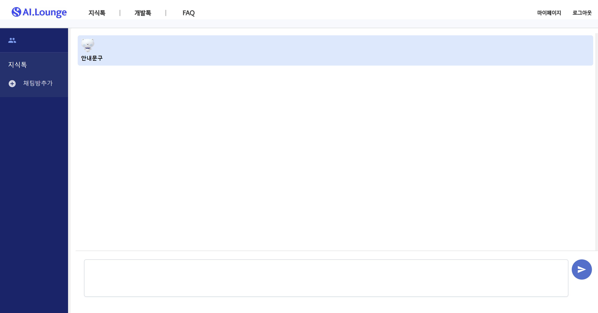
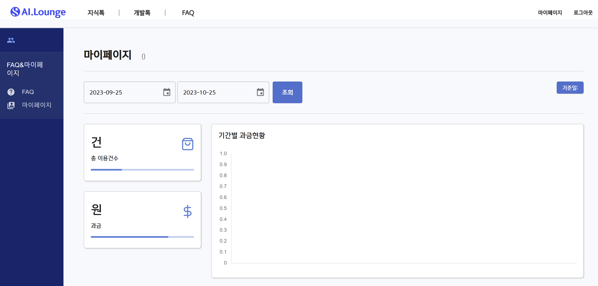
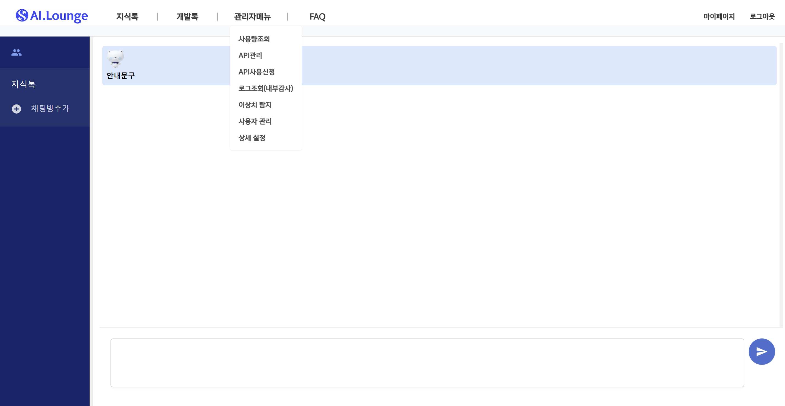
디개부 시절
디개부AI — 라이프셀
정식 버전 · 신한은행 디지털서비스개발부
gpt-oss-120b(오픈소스 모델) + Gemini CLI 무료버전 만으로 제작 (이때는 안 막혔음)
PART B
프로젝트 소개
택가이웹 · AICR · 택가이코드
Production #1
택가이 웹
≠ 기존 Dify 택가이 · 이름만 계승
초기 2주(디개부) + 변형 2주 + 이후 유지보수 중
디개부AI 시절 2주간 만든 초기 버전 → 현 부서에서 2주간 변형 → 그 뒤로 쭉 유지보수
개발망 반입 1-2달
취약점 점검 · 환경세팅 · 인프라 협의
3개 망 배포
개발·모개망 정식 · 운영망 베타
기존 오픈소스는 사내에 쓰기 적합하지 않음
Open WebUI 등 — 내부통제·관리자 기능·보안 요건 미충족
Production #1
택가이웹 — 자세히 보기
Demo
영상 시연
별첨 3. 2024.10.21 부서장회의 시연영상 · 더블클릭 시 전체화면
Production #2
AICR — 개발의뢰 자동화
AI가 개발의뢰서를 대신 써준다
PDF → 의뢰서 가능
공문 업로드 → 의뢰서 자동 생성
기획 3개월+ → 구현 3주
외주 3-4명 3-4주분 → 1-2일 · 개발은 더 이상 병목이 아님
ITBPI 추후 연동 예정
기존 시스템과 통합 계획
진짜 병목은 기획·절차
개발 자체는 병목이 아님 · 기획/반입/협의가 진짜 시간
Production #2
AICR — 자세히 보기
Production #3
택가이코드
터미널에서 돌아가는 AI 개발 도구 · 현재 제작중
- 수많은 오픈소스 참고: 유출된 Claude Code, OpenCode, Codex, Gemini CLI...
- MCP, Skills 같은 공통 규격은 가져다 씀
- 내부망 특화 하네스는 어디에도 없어서 자체 제작
📄 시연 영상은 별첨 4. 클로드코드_시연영상_20260320.mp4 참고 (부록 2에서 다운로드)
🌐 이 발표자료 온라인: https://techai-code.vercel.app/
Summary
이제는 안 쓸 이유가 없습니다
| 프로젝트 | 코드 구현 | 기획/반입 포함 | 현재 |
|---|
| 택가이웹 |
초기 2주(디개부) + 변형 2주 |
반입 1-2달 |
개발·모개망 정식 운영 베타 |
| AICR |
POC 1-2일, 완성 3주 |
기획 3개월+ |
개발망 배포 |
| 택가이코드 |
제작중 |
- |
빌드파일 배포중 |
개발은 더 이상 병목이 아닙니다 — 기획과 반입 절차가 진짜 시간입니다
이건 회사 업무에만 해당되는 얘기가 아닙니다 — 개개인의 삶에서도 안 쓸 이유가 없습니다.
인프라
사내 LLM 인프라 현황
▲
▼
택가이웹
모델 중개 · 로그 관리 · 관리자 패널
현재 쓸 수 있는 모델을 최적화해서 좋은 제품을 만드는 것이
차별점이자 실력이자 노력
PART C
AI 트렌드 &
바이브코딩
개념 정리, 도구 지형도, 하네스 엔지니어링
AI = 피트니스
🏋 운동
- 꾸준히 해야 근육이 붙는다
- 내일부터 = 실패 공식
- 월 3만원이라도 등록
- 루틴이 전부
🤖 AI
- 많이 써야 실력이 붙는다
- 내일부터 = 영원히 안 함
- $20이라도 구독
- 루틴이 전부
조심해야 할 것들
- 써보지 않고 논하는 것은 의미가 없다
- 오늘 처음 알게 된 걸로 지식을 선점하는 사람 — 그 기술은 내일 사장될 수 있다
- 한 가지에만 꽂혀서 "이게 최고"라고 주장하는 사람
- "제미나이가 좋고~ 그록이 어쩌고~" — 다 걸러서 들어야 한다
- "RAG는 죽었다", "클로드는 끝났습니다" 같은 어그로 글이 많은데
읽어보면 은근 도움이 된다 — 주변에 제대로 알고 얘기하는지, 헤드라인만 듣고 얘기하는지 판별도 가능
- 과거 AI는 대학원 정도는 나와야 가능한 분야였지만
지금은 루틴으로 가져가며 더 관심을 많이 가지는 사람이 잘할 수 있는 분야가 되었다
이 분야는 너무 빠르게 변합니다. 특히 개발자라면 직접 써보고 판단하세요.
AI판 흔한 풍경
그럴듯한데 틀린 말 · 서로 끄덕임으로 사실이 되는 순간
👨💼
"어제 들었는데 RAG는 이제 완전히 죽었대요.
전부 MCP로 바뀌는 추세래요."
👩💼
"아 맞아요 맞아요. 그리고 컨텍스트가 무한대라서
이젠 프롬프트 엔지니어링도 필요 없대요." 👎👍
👍 (끄덕) · 👍 (끄덕) · "역시 프로님은 다르세요"
🧐
(속으로)
· RAG 안 죽었는데...
· 무한 컨텍스트 아닌데...
· 그 둘 관계도 아닌데...
실제로 써본 사람
상대방이 알고 말했다고 무작정 믿지 말자.
가장 좋은 판별법은 두 가지 —
“그래서 뭘 만들어 봤는가”, “어떤 공부를 실제로 하고 있는가”
집단광기 — 무지성 연호
에이전트, 에이전트, 에이전트...
MCP, MCP, MCP...
클로드, 클로드, 클로드...
RAG... RAG... RAG...
바이브코딩! 바이브코딩!
에이전트틱! 에이전트틱!
AGI, AGI, AGI...
프롬프트! 프롬프트!
🤤
"어? Gemma4 나왔대!
이게 최고 아니야?"
— 써본 적 없음 · 기사 헤드라인만 봄 · 내일은 딴 거
적어도 — 헤드라인만 보고 얘기하는 사람을 거를 수 있는 능력을 키우자.
사실 한 개념 한 개념, 5분만 투자해도 어렴풋이나마 이해할 수 있는 것들입니다.
클로드코드 ≠ 클로드
개념이 헷갈릴 수 있습니다 — 정리하면 이렇습니다
🎨 인터페이스
Claude Desktop, 웹 채팅
→

⚙️ 코딩에이전트
CLI, IDE Extension 등
→

🧠 LLM 모델
Claude, GPT, Gemini...
→

같은 모델을 사용해도 다른 제품이 될 수 있어요
AI 코딩 도구 지형도
만능은 없지만, 대세는 있다
TERMINAL / CLI — 추천
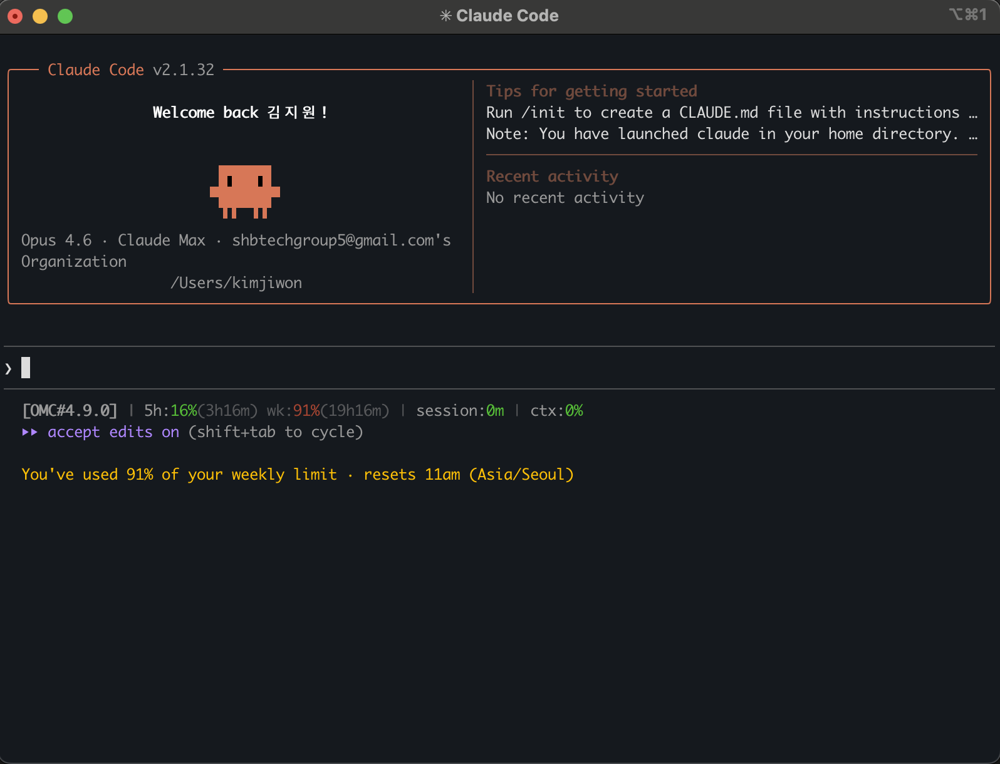
Claude Code
성능 최적화, 현재 대세
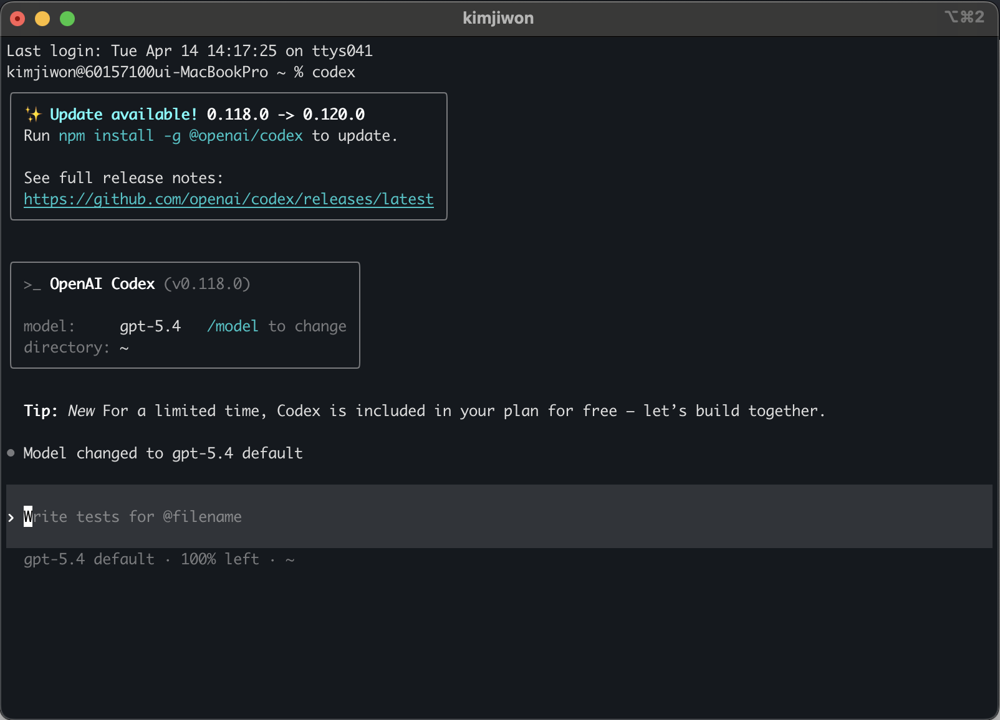
OpenAI Codex
CLI 에이전트, 코드 이해
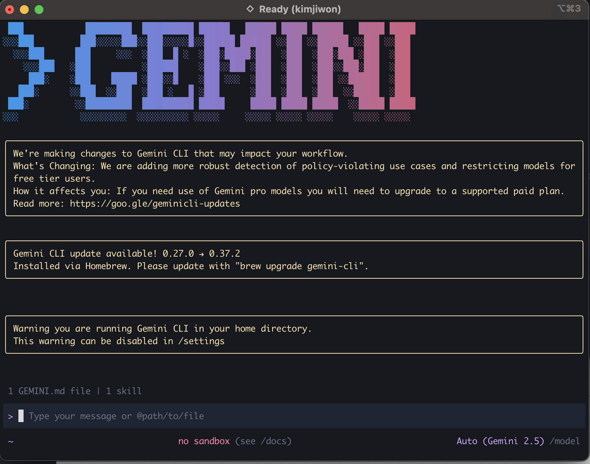
Gemini CLI
Google, 무료 티어 넉넉
IDE — 주시
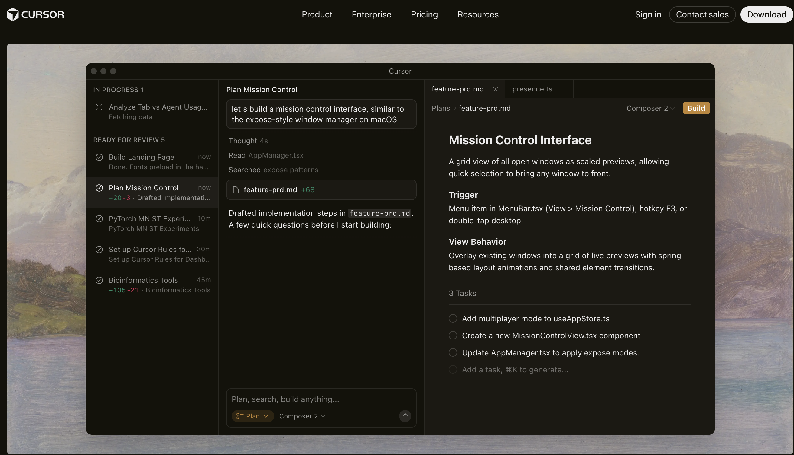
Cursor
IDE 통합형, 진입장벽 낮음
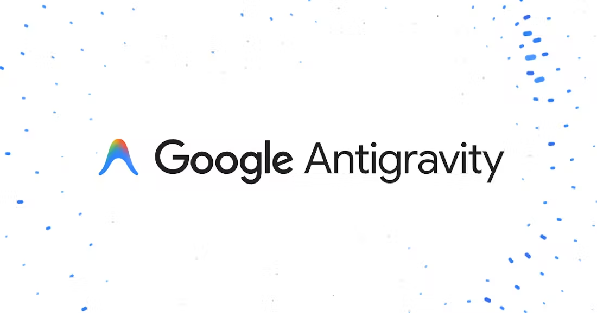
AntiGravity
무료 체험 가능
하네스 엔지니어링
Harness Engineering은 AI 에이전트가 안전하고 일관되게 작동하도록
제어 환경, 구조, 도구를 설계하는 기술입니다.
저사양 모델 + 자세한 지침과 설명이
고사양 모델 + 대충 정한 지침과 설명을 능가할 수 있다
수천 줄의 룰베이스
하드코딩 · 컨텍스트 제한
시스템 프롬프트
하네스 엔지니어링 — 왜 필요한가
말(🐎)을 부리는 기구 → AI가 제멋대로 동작하지 않게 구조적으로 제어하는 것
컨텍스트 붕괴
작업이 길어질수록 일관성 붕괴
한계 도달 시 서둘러 마무리
자기 평가 실패
자기 결과물을 과대평가
특히 디자인 등 주관적 영역
실제 검증 사례
Anthropic — 하네스로 완전한 앱 생성
LangChain — 같은 모델, 하네스만 교체 → 30위→5위
OpenAI — 100만 줄 중 대부분 하네스 설계
주목할 프로젝트
gstack — YC CEO, 23개 스킬 팩
Ouroboros — 소크라테스식 질문으로 모호함 제거
Hermes Agent — 자가 성장형 (★81K)
LLM Wiki — Karpathy, 지식 축적 패턴
기존 하네스를 가져오되, 내 워크플로우부터 먼저 파악하고 필요한 것만 하나씩 붙이세요
바퀴와 렌트카가 넘쳐난다
만들 필요 없이 가져다 조립하는 시대
나만의 에이전트
n8n, OpenClaw,
Hermes Agent 등
나만의 사이트 · 앱
Claude Code, Codex 등
최적화된 블록 조립
무료 배포
Vercel, Netlify,
GitHub Pages, Cloudflare
무료 DB
Supabase, PlanetScale,
Neon, Turso
자동화 플랫폼
n8n, Make, Zapier
노코드 워크플로우
UI 컴포넌트
shadcn/ui, Radix,
Tailwind UI, daisyUI
최적화된 블록들을 가져와 조립만 하면 만들 수 있는 시대
단, 기존게 마음에 안 들고 내가 더 잘 만들 수 있을 것 같다는 생각이 든다면
더 쉽게 도전해볼 수 있는 시대가 왔다
PART D
실전 팁 &
지름길
뭘 쓰면 좋은가, 공부 방식, 최적화 & 배포
실전 추천 — 기술 선택 지름길
1
완전 초보
Claude Desktop $20/월 구독 → 일단 써보기 (Codex도 OK)
2
좀 해본 사람
Claude Code + Codex CLI 둘 다 써보기
별첨: OpenCode, OMC, OMO 등도 추천
3
더 깊이
OpenClaw / Hermes 직접 설치해서 뜯어보기
4
프로
처음부터 끝까지 AI를 활용해 온전히 자기가 무언가를 만들어보기
👉 웹페이지에서 사용을 해보는 게 아닌 CLI 코딩에이전트를 사용해보는 것을 추천하는 겁니다
공부 방식이 바뀌었다
🤖 현재
- AI에게 물어보기
- 코드 생성
- 이해하며 수정 → 자연스러운 학습
- 처음부터 끝까지 직접 구현해본 경험이 가장 중요
- 프레임워크(React, Next.js, FastAPI 등)는 도구일 뿐, 진짜 실력은 문제 해결 능력
- AI 없이 만들 수 있던 사람은 AI로 2-10배 빠름
개인적 꿀 조합 — 추천 스택
정답은 없지만, 시작하기 좋은 조합들
웹 개발
Next.js, Remix.js
둘 다 React 기반 풀스택 프레임워크
현재 웹 개발은 무조건 이 둘
데이터베이스
PostgreSQL, MongoDB
Supabase (강추) — 무료 티어 넉넉
인증, 스토리지, 실시간 DB까지
앱 개발
Flutter — 하이브리드 앱 대세
React Native도 있지만
개인적으로 Flutter 추천
데스크탑 앱
Electron, Go, Rust 등 다양
개인적으로 Go 사용 중
딱히 이유는 없다. 레퍼런스가 많아서 AI 활용하기 좋았다
배포
요즘엔 초등학생도 배포할 수 있다 — Vercel, Netlify, GitHub Pages, Cloudflare 등 매우 유용한 사이트들이 넘쳐난다
이런 재료들을 이용해 혼자 직접 AI에게 물어가며
처음부터 끝까지 해본 "한 바퀴"의 경험이 중요하다
저도 아는 것도 많지만
모르는 것도 많다
- 깊진 않더라도 모든 걸 해본 경험이 요즘 시대에 정말 많은 도움이 된다
- AI 도구, 오픈소스를 많이 써보는 것이 정말 많은 도움이 된다
- 모르는 건 그날그날 쉽게 공부할 수 있는 시대가 왔다
기술적 대화, 트렌드 이야기 환영합니다 — 편하게 연락 주세요
내가 사용하는 현재 세팅 1/4
주력 코딩 에이전트

Claude Code
주력 코딩 에이전트

Codex
OpenAI CLI 에이전트
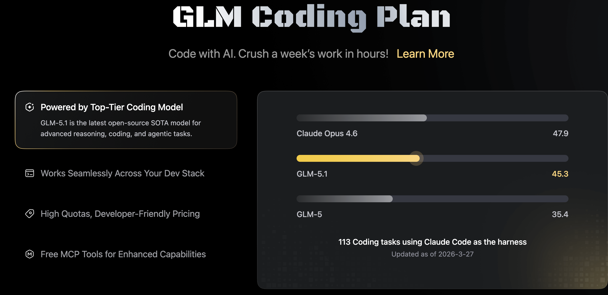
GLM
이건 몰라도 됩니다 😄
내가 사용하는 현재 세팅 2/4
tmux / cmux — 다중 터미널로 에이전트 병렬 실행
한 화면에서 여러 에이전트를 동시에 — 병렬 작업의 핵심
내가 사용하는 현재 세팅 3/4
하네스 도구 — 코딩 에이전트 위에 얹는 확장
OMC
oh-my-claudecode
Claude Code 하네스
멀티 에이전트 오케스트레이션
OMO
oh-my-opencode
OpenCode 하네스
오픈소스 에이전트 확장
OMX
oh-my-codex
Codex 하네스
OpenAI 에이전트 확장
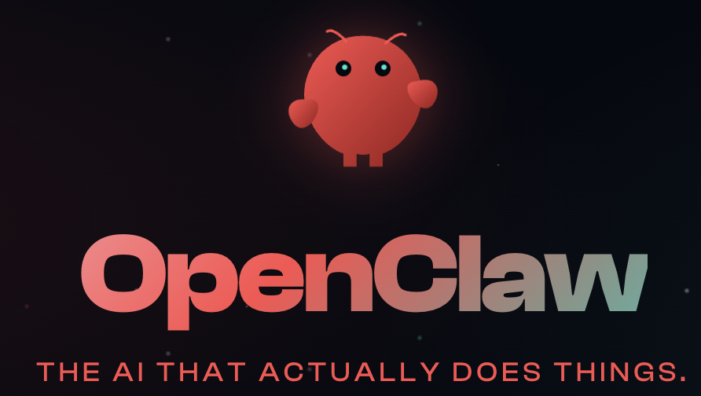
OpenClaw
개인 AI 비서 (by @steipete)
WhatsApp, Telegram 등에서 제어

Hermes Agent
Nous Research (80k+ stars)
자체 개선형 AI 에이전트
하네스가 들어간 일종의 확장 도구들 😂
내가 사용하는 현재 세팅 4/4
의외의 활용 — Claude Desktop
다중 프로젝트 분석
폴더 단위 분석
코드 비교 · 구조 파악
코딩만이 아니라 업무 전반에서 AI를 활용하는 것이 핵심
결론
오늘. 당장.
시작하세요.
1. AI는 피트니스 — 내일부터가 아니라 오늘 당장
2. $20이라도 내 돈 주고 사서 지금 시작
3. 빠른 지름길로 시작하세요
4. 진짜로 많이 써보면 감이 온다 — 단순하지만 확실하다
5. 회사 업무만이 아니라 내 삶에도 붙이자
일상에서 이런 것도 AI로 —
PPT 제작
이미지 생성
투자 분석 · 조사
부동산 공부
나만의 에이전트
Tech혁신Unit · 김지원 프로
코드 공유 가능 · 질문 언제든 환영합니다
부록 1
참고자료 & 추천 도구
AI 코딩 도구
- Claude Code — claude.ai (Pro $20/월)
- OpenAI Codex — platform.openai.com
- Gemini CLI — ai.google.dev (무료 티어)
- Cursor — cursor.com
- AntiGravity — 무료 체험 가능
추천하는 오픈소스 에이전트
- OpenClaw — 개인 AI 비서 (WhatsApp, Telegram 등 제어)
- Hermes Agent — Nous Research, 자체 개선형 AI 에이전트 (80k+ stars)
부록 2
별첨 자료
※ 클릭하면 다운로드됩니다
부록 3
AI 소식 & 추천 채널
🎥
제로초TV
YouTube — 웹 개발 + AI 코딩 실전 영상
🎥
메이커에반
YouTube — 최신 AI 트렌드 & 실전 활용법
🤖
choi.openai
Threads — 각종 AI 소식 빠른 공유
📰
GeekNews
news.hada.io — 개발/AI 뉴스 큐레이션